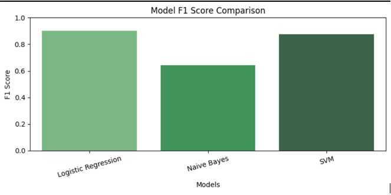
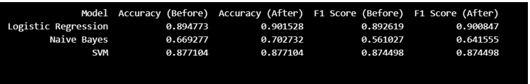
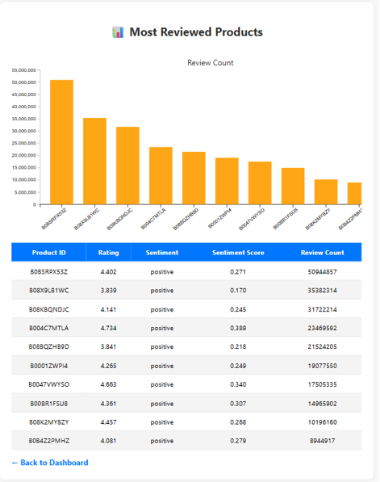
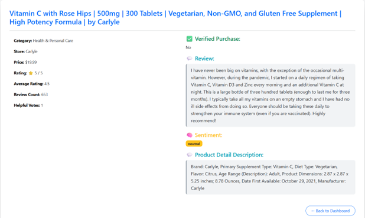

Most Reviewed Products Analysis
This view highlights top-performing products based on review volume. It combines review count, rating, and sentiment score to identify high-engagement products and support product prioritization.
This project follows a complete analytics workflow, starting from raw review data and ending with interactive dashboard insights for product evaluation and business decision-making. This project combines machine learning, sentiment analysis, and interactive visualization to analyze Amazon product reviews and generate actionable insights for product recommendation and business decision-making.
The system transforms unstructured customer reviews into structured insights by applying sentiment analysis and combining it with features such as rating, price, discount, and verified purchase status. The results are presented through an interactive dashboard for real-time exploration.
E-commerce platforms contain massive amounts of review data that are difficult to interpret. Customers struggle to identify high-performing products, while businesses lack clear insights into sentiment trends and product performance. This project addresses these challenges through automated sentiment analysis and dashboard visualization.


Logistic Regression achieved the best performance after hyperparameter tuning, reaching 90.15% accuracy and 0.9008 F1-score, making it the most suitable model for sentiment classification.

This view highlights top-performing products based on review volume. It combines review count, rating, and sentiment score to identify high-engagement products and support product prioritization.

This page provides detailed insights into a selected product, including review text, sentiment classification, rating, and metadata, enabling deeper understanding of customer feedback.